Every project here is live and linked. Businesses, technology platforms, institutions and organisations, each one built to hold up under real use.
A growing portfolio of professional websites built for purpose-driven organisations and individuals.
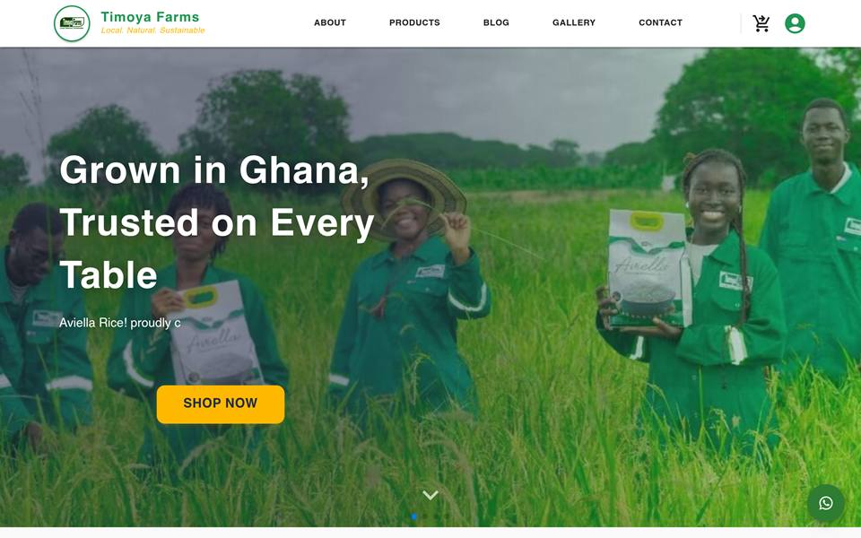
LiveA commercial website for Timoya Farms, presenting their agricultural products and services to buyers and partners. Built to give an established operation a digital presence that matches the quality of the business behind it.
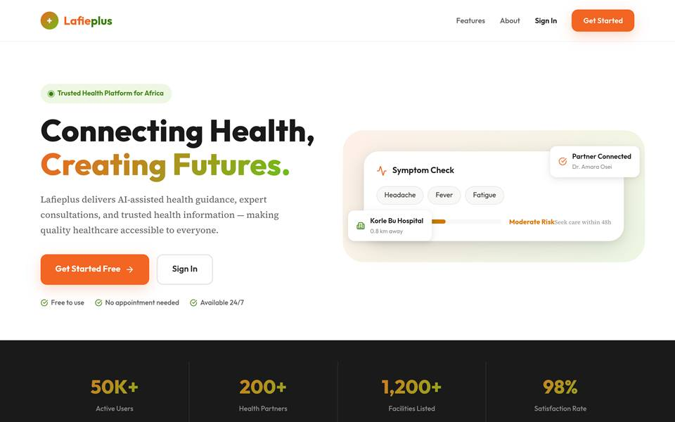
LiveA production frontend for the Lafie Plus platform. Responsive across every device, engineered for clarity under real use, with accessibility treated as a requirement rather than an afterthought.
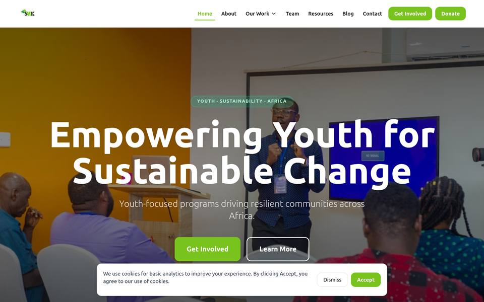
LiveA complete organisational platform for SWK Ghana, covering programmes, leadership and entrepreneurship work across Ghana. Built with React and Vite, deployed on Vercel, and since extended with two further builds.
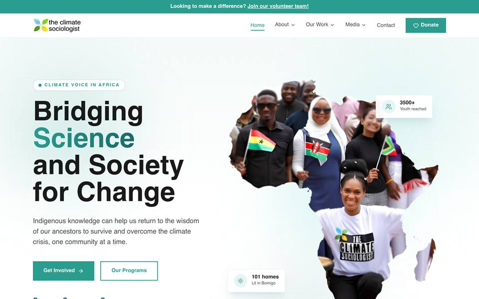
In progressA full website redesign for a youth-led climate education NGO in Ghana. Built with React and Tailwind CSS, powered by a Sanity.io CMS so the client can manage programs, blog posts, gallery images, and partner logos independently.
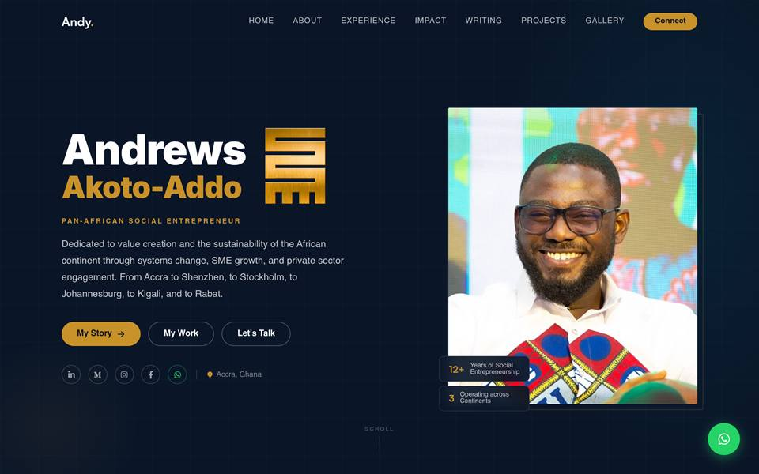
LiveA premium personal portfolio for a Pan-African social entrepreneur and ecosystem builder. Features a full experience timeline, Medium and WordPress RSS integration, a photo gallery with lightbox, and a professional contact page.
A professional portfolio website currently in development for a corporate consultant based in Liberia. A clean, modern personal site designed to showcase work, experience, and personal brand to the world.
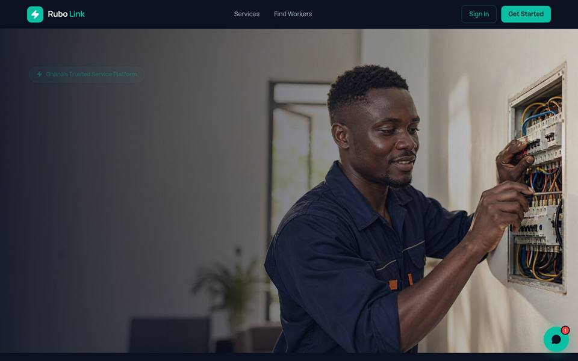
LiveA service marketplace connecting Ghanaian homes and businesses with vetted local professionals across plumbing, electrical, cleaning, AC repair, and more. Built and operated by KoomBei Digital Limited, with MoMo and card payments, background-checked workers, and coverage across 6+ cities.
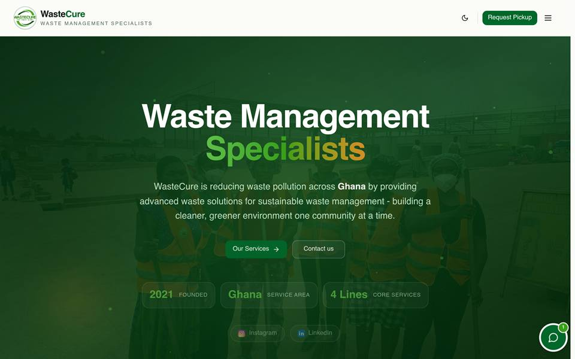
LiveA business website for WasteCure, a waste management and recycling company in Kwabre East Municipality, Kumasi, providing plastic waste collection, recycling, community education, and waste management consultancy. Built with Next.js, deployed on Vercel.
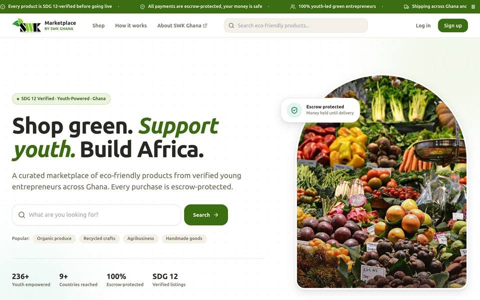
LiveAn e-commerce marketplace built for SWK Ghana, giving the organisation a dedicated storefront to list and sell products online, with the catalogue and checkout running as one system.
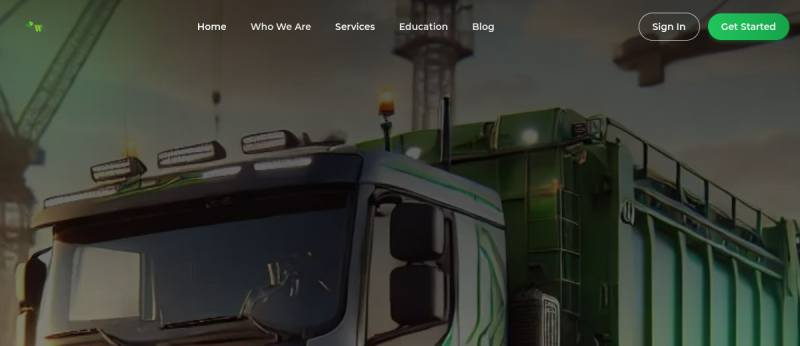
LiveA dedicated platform for Taka Kipawa, a waste management initiative under SWK Ghana. Built to give the project its own identity, communicate what it does, and bring communities into the work.
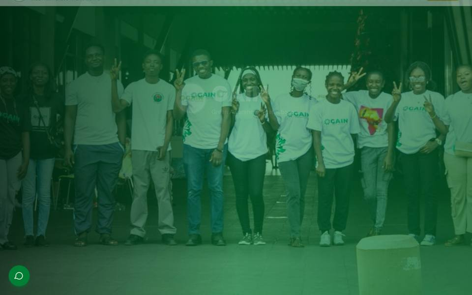
LiveA full website for GAIN, a youth-led nonprofit empowering young people and communities to drive environmental change in Ghana through skills development, public education, and environmental action. Built with Next.js, deployed on Vercel.
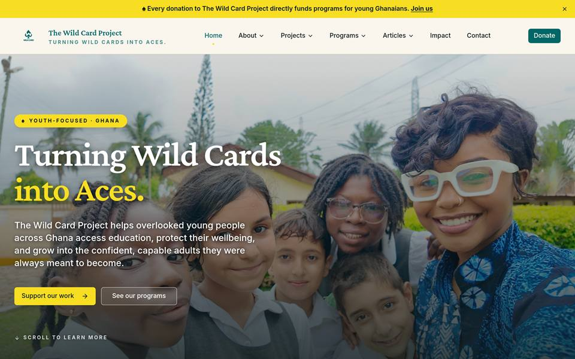
LiveA full organisational website for The Wild Card Project, a youth development NGO in Accra helping overlooked young people access education, protect their wellbeing, and grow, built around its three pillars: Education, Wellbeing, and Empowerment.
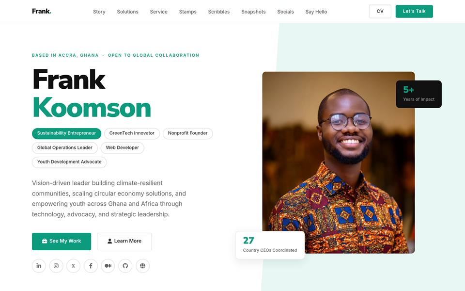
LiveA professional personal portfolio website for a development sector leader and entrepreneur. Features a 9-role experience timeline, Medium RSS feed integration, Cloudinary gallery, and full SEO implementation.
We are taking on new clients: companies, institutions, startups and organisations. Tell us what you are building.
Start your projectEvery number here is a real organisation whose digital presence we built and still support.